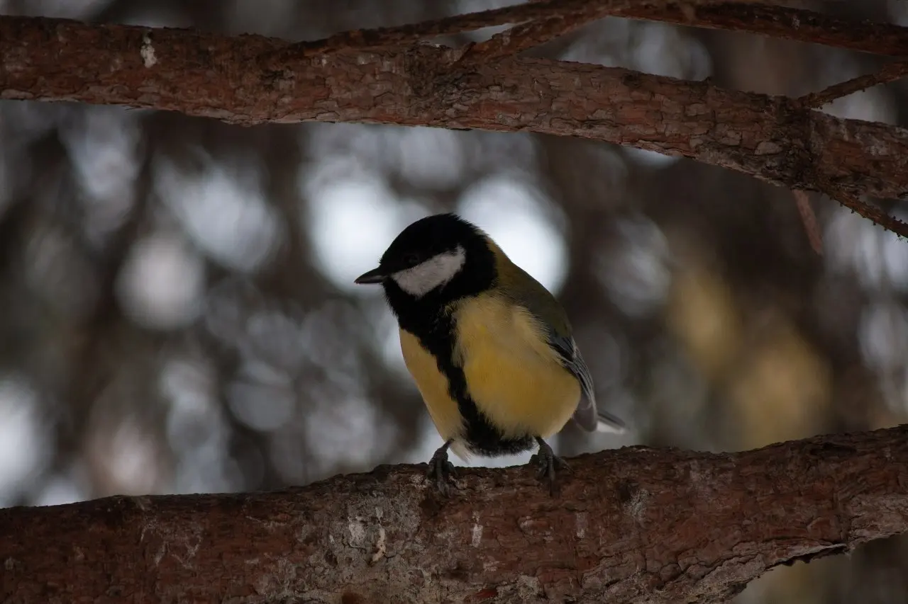

Виды света в фотографии
Свет — то на чем стоит вся фотография. Не умеешь использовать — не умеешь фотографировать.
Выбирайте нужную категорию:
1. Лучшие зеркальные фотоаппараты для новичков 2. Лучшие зеркальные для продвинутыхНо, перед этим, у меня к вам вопрос.
В искусстве фотографии давно уже не рулит тот факт, что у тебя есть фотоаппарат. Зная правила композиции, как использовать свет и цвет, снимки можно делать хоть на телефон.

.jpg)

И тем не менее, фотоаппарат может пригодиться фотографу как:
— Cпособ изучения треугольника экспозиции.
— Способ получения прекрасного боке с помощью линз.
Так как на телефоне размер матрицы значительно меньше фотоаппарата, то боке эффект там будет лишь при крайне близких расстояниях. На фотоаппарате можно получить этот эффект при помощи самого простого, дешёвого объектива.
— Способ использования разных объективов с разным фокусным расстоянием. Слишком скучно сидеть на телефонных 20мм. Среднестатистическому телефону недоступны портретные расстояния 85мм.
Или теле-расстояния 200мм.
Эти вещи дают фотографу большой творческий выбор. Все это можно использовать как художественные приемы. А для некоторых жанров съемки, например дикой природы, без телеобъективов точно не обойтись. Соответственно, фотоаппарат может быть очень полезным инструментом.
Но, иногда он действительно не нужен. Если вы хотите делать стрит фотографии, запечатляя жизнь людей на улицах, это можно делать с помощью телефона. И это будет даже проще. Кто на вас будет обращать внимание с телефоном в руках? А с огромным фотоаппаратом?
Я веду к тому, что правда в том, что вам нужно понять: что вы хотите снимать? Ещё перед покупкой оборудования.
Фотоаппарат будет полезен, так как даст дополнительные художественные возможности, которые только ты будешь решать, использовать их или нет. Может быть, ты не разу не воспользуешься возможностью делать красивое боке, которое так любят все фотографы. Зато, ты найдешь что-то другое, что привлекает только тебя. Это и есть авторское виденье.
Соответственно, если ты будешь пользоваться какими-то функциями фотоаппарата, а какими-то совсем нет, то и с этого момента можно будет начать понимать, ради чего тебе нужен фотоаппарат. И в будущем, купить именно то, что отвечает конкретно твоим требованиям, ведь, они уже сформированы.
Начнем от самых бюджетных до самых дорогих. Спойлер: даже крайне бюджетные модели могут обеспечить вас хорошими характеристиками.
Также, по началу я буду показывать модели которые можно купить только на авито. Так как производились они довольно давно. Но это не значит, что они настолько старые, что с ними будет сложно снимать. Или вам разрешения не хватит. Все модели прекрасные, у всех есть свои плюсы и минусы, но минусы старых моделей не будут перевешивать. В любом случае, есть в списке и новые модели. Но, сразу предупреждаю: история с покупкой нового зеркального фотоаппарата — это всегда плохое соотношение цены и качества.
— Не смотрите на шизов, которые продают выше минимальной +/- цены, особенно без дополнений.
— Цены которые я буду давать, как раз являются нормальной ценой для рынка на момент апреля 2024 года

— Когда-то они производились в линейке полупрофессиональных: имели идеальную эргономику, хорошую матрицу с прекрасным динамическим диапазоном. Но и сейчас имеют! Со временем, даже самая старая из них Canon 40D не постарела. Если вам не нужно распечатывать плакаты размером с дом, то 10МП хватает с лихвой.
— Все они с байонетом Canon EF-S, на которую есть много своей и сторонней оптики.
— Съемка видео в старших моделях: в 60D впринципе возможно снимать видео. А в 70D есть нейросетевая автофокусировка по лицу Canon DualPixel. А 70D это самая дешевая модель на рынке с подобной системой фокусировки.
— Все они довольно тяжелые. Я сам лично владею 40D, с батарейным блоком. Это ужасный экспириенс. Снимать на улице держа его в руках — неприятно.
— К целесообразности покупки 50D есть вопросы: 50D почти не отличается от 40D, но в нем все еще нельзя записывать видео. Полное сравнение на сайте camspex.com Получается, 60D уже кажется более интересной моделью. Если вам конечно нужна возможность записи видео.
Вообще не аргумент. Более новые модели от Canon, за такую же стоимость имеют стрёмную эргономику, плохие материалы изготовления. Ну и просто матрицы хуже.
Canon 40D ~4000р
Canon 50D ~8000р
Canon 60D ~20000р
Canon 70D ~32000р

На самом деле, разница не большая: и там и там поворотные экраны, удобные электронные видоискатели с большим расширением. Оба имеют технологию полупрозрачного зеркала, которая позволяет фокусироваться и через экран и через видоискатель фазовыми точками. 24Мп матрица тоже работает прекрасно по сей день.
То, что их разъединяет: заключается в удобстве использования и цене. А77 лучше защищена, имеет три оси для поворота экрана, а также более лучшую эргономику. Вот сравнение на сайте camspex.com На самом деле, на что хватает денег, то и можно взять.
— Фокусировка фазовыми точками даже в видео режиме
— Поворотные экраны
— Хорошая эргономика
— Байонет Minolta A имеет большое количество объективов.
— A77 довольно большая камера, с весом в 730 грамм. Когда как А65, 622 грамма. Не для каждого будет удобно.
Sony SLT-A77 ~25000р
Sony SLT-A65 ~18000р
Эти камеры есть в каждой подборке. Я считаю, что кидать подобное в подборку "лучших" можно только человеку, который вообще не разбирается в том, о чем говорит.
У них самые плохие матрицы и качество материалов. Соотношение цены/качества просто ужасно. Это же одни из последних камер выпущенных Canon, но они специально функционально обрезаны, чтобы соответствовать "бюджетной линейке". И тем не менее, стоят они больше чем старые и более лучшие по характеристикам фотоаппараты.
Между 2000D и 4000D есть небольшая разница. Матрица в 2000D с гораздо более лучшим динамическим диапазоном. Ну и 24Мп, вместо 18Мп.
— Стандартный функционал подходящий для любого начинающего фотографа
— Продается сразу с китовым объективом
— Цена/Качество
— Самые слабые матрицы из всех моделей
— Самый стремные материалы производства корпуса из всех моделей
— Слабая эргономика: очень мало кнопок
Цена? |
Canon 2000D | Canon 4000D |
| В магазине | ~40000р | ~40000р |
| На авито | ~20000р | ~18000р |
Если для начала занятия фотографией вы можете позволить себе подобные вещи за подобную стоимость, то это ваш выбор!
Различаются они лишь ценой и удобством использования: в 90D удобнее эргономика, LCD-панелька сверху, матрица лучше. Ну и 90D весит больше, разница в 200 грамм значительна.
А так, они оба имеют откидной экран, возможность записывать 4К 30FPS видео, и автофокусировку по лицу dualpixel. То есть, они подойдут хорошо для съемки видео. Единственное, 90D умеет писать слоумо 120фпс, 850D нет.
— Автофокусировка по лицу
— Подходят для большинства задач фотографа. Скорее сложно сказать, для чего они не будут подходить.
— Байонет Canon EF-S богат на объективы.
— Прекрасные видео-возможности
— Если вас устраивает ценник, то проблем нет!
— Эргономика в 850D уступает 90D
Цена? |
Canon 850D | Canon 90D |
| В магазине | ~85000р | ~105000р |
| На авито | ~55000р | 70000—80000р |
Обычно крутые берут беззеркалки, но если ты знаешь зачем тебе именно зеркальная система, то поехали.
Одна из самых последних моделей всем известной компании. Отвечает ну просто всем требованиям современного фотографа.
— Full Frame, 30Мп сенсор с прекрасным динамическим диапазоном.
— Dualpixel автофокусировка по лицу
— 4к 30фпс видео
— Эргономика на высоте (как и во всех Canon)
— Экран не поворотный
— Вес: 890 грамм
Это реально практически схожие модели с Canon 5D. Только тот обыгрывает 6D своей матрицей и видео возможностями. Но, 6D будет случаями удобнее: откидной экран и меньше веса дадут о себе знать на съемке. А стоимость... в магазинах аж на 40% дешевле. Вот сравнение на сайте camspex.
— Откидной экран
— Full Frame, 26Мп сенсор все ещё с прекрасным динамическим диапазоном
— Dualpixel автофокусировка по лицу
— Если для вас важнее матрица, то 6D хуже 5D
Почему? Вот сравнение с тем же 5D Mark IV на сайте camspex. Nikon D850 обыгрывает его почти по всем параметрам.
— Full Frame, 45Мп сенсор с сумасшедшим динамическим диапазоном
— Откидной экран
— Большой буфер — в продолжительной съемке сделаете до 200! RAW фото
— Никакой нейросетевой системы автофокусировки нет ((
— Вес 1005 грамм — не удобен
С Авито: 120000-130000р.
С магазина: ~200000р
Мне кажется, его можно сравнить с Canon 6D Mark II. Потому что они оба имеют хоть и не сумасшедшие сенсоры, но куча других привилегий. Например, они оба хорошо могут подойти для видео. Так-как: имеют хорошие системы фокусировки прямо во время использования откидного экрана. Но, только в 6D, автофокус DualPixel, который умеет сам наводится на лицо. У A99 такого нету, зато есть матричная стабилизация.
Матрица у А99 лучше по динамическому диапазону, но хуже по низкоосвещенному ISO. Вот сравнение, camspex.com.
— Возможность фазового автофокуса как и с видоискателем, так и с экраном
— Откидной экран
— Неплохая матрица: обыгрывает 6D по динамическому диапазону
— Нет следящей автофокусировки
С авито: 30000-50000р
Да, то же самое, что я и добавлял в категорию "для новичков". Но как так?
Дело в том, что эта камера может проконкурировать аж с самой Canon 6D Mark II! Он буквально лучше неё, с точки зрения цены/качества. 6D Mark II имеет фулфрейм сенсор, значит он будет использовать более дорогую оптику на байонете EF. Соответственно, потратишь больше денег.
У них буквально одинаковые процессоры, но, учитывай, что обработать изображение с фулфрейм матрицы процессору будет сложнее, а соответственно 6d mark II будет медленнее в продолжительной съемке. А в видео она даже не будет иметь 4к разрешения. В 90D оно есть. Можете посмотреть сами, camspex.com
Но, в фулфрейм матрице 6D Mark II есть и плюсы: естественно, она будет лучше себя проявлять в условиях низкой освещенности. Хоть и у 90D динамический диапазон будет лучше.
— Автофокусировка по лицу
— 4К 30фпс, разьем для наушников и микрофона: хорошее решение для съемки видео
— Байонет Canon EF-S
— Вес меньше чем у 6D Mark II
— Если для вас принципиальна фулфрейм матрица, у 90D стоит APS-C
Дата публикации: 27.03.2024